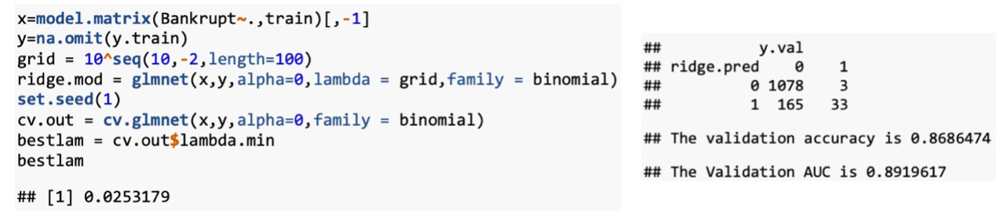

Will your company go bankruptcy?
ABSTRACT
This report aims to find the model with the highest accuracy and interpretability to predict whether a company will go bankruptcy using a series of financial ratios. For pre-processing, we do the data cleaning and rebalance the data using ROSE method. After randomly split the entire data set into training data (60%), validation data (20%) and test data (20%), we use the training data to fit different models. Our models include Linear methods (Logistic Regression, Linear & Quadratic Discriminant Analysis, Naïve Bayes, Ridge Regression, Lasso), Tree methods (Single Tree, Pruned Tree, Bagging, Random Forest, Boosting), Support Vector Machines (linear, radial, polynomial kernel) and Neural Network. We choose validation Area Under Curve (AUC) as our benchmark and do the comparison. We found that Logistic Regression method gives the best performance. To further improve the interpretability, we refit the best models in each method with the most significant features given by Logistic Regression. The result showed Logistic Regression still performs the best, which reported 85.90% test accuracy and 89.71% test AUC with balanced false errors.

INTRODUCTION
Bankruptcy and failure of business have a negative impact on the enterprise itself, the industry, and even the economy. Entrepreneurs, economists, shareholders and investors pay much attention to the prediction accuracy on the bankruptcy. An accurate prediction can not only help investors make decisions, but also guide the company to pay more attention to the important factors and ratios, which are highly related to bankruptcy, in daily operations. If any important ratios are abnormal, the executives of the company should be alert and pay immediate attention to avoid bankruptcy. This project can help us to predict company bankruptcy. This can help stakeholders make investment and lending decisions. It can also help businessmen to improve operations and better control risks. The results of the study will benefit the economic analysis as well.
In this study, the data used were all financial ratios. There are in total 96 features and 6819 observations. They can be categorized into the following groups: solvency, capital structure ratios, profitability, turnover ratios, cash flow ratios, and growth rate. In practice, we will evaluate an enterprise’s performance, profitability, the ability to pay debt and so on by looking into these ratios. These variables are all ratios that can reveal the possibility of bankruptcy and we want to find out the most important ones. To overcome the missing data and imbalance problem, we did some preprocessing.
We used four types of classifiers. The first category was linear methods including logistic regression, Linear & Quadratic Discriminant Analysis, Naïve Bayes, Ridge Regression, and Lasso. The second was tree-based methods including single tree, pruned tree, bagging, random forest and boosting. The third method is support vector machines, and the fourth is neural networks.
DATA PROCESSING
In the preprocessing part, we will first delete missing values and unreasonable parameters which should not have values of a large scale like R&D expense rate according to our accounting knowledge. The distribution plot of R&D expense rate (figure 1) shows that there are unreasonable and rare values of over 1 million, which will decrease our model prediction accuracy and predictability. After that, we split the data into training, validation, and test set in the ratio of 6:2:2 since we have a large sample size.
Secondly, we need to rebalance the data due to heavily imbalanced output variable ‘Bankruptcy’. There are 6599 zero values in ‘Bankruptcy’ while only 220 are one values, prediction model tends to bias toward non-bankruptcy output if we don’t rebalance our training set. We utilized four most common rebalancing method which are oversampling, combination of oversampling and under sampling, ROSE and SMOTE to re-sample original training set, and compare validation AUC by fitting GLM and SVM. Result shows that ROSE performs best under both models, so our final data was resampled using ROSE method. (Detail data resampling and fitting ROC will be showed in the appendix)
We will use AUC as a criterion to compare different models instead of MSE, since our data set is imbalanced and only using MSE will bias toward 0 values. For example, the figure below shows that if we predict all the observations as 0, FNR is 1and FPR is 0 but the overall accuracy is 95%. Unlike MSE, ROC curve will balance both the FPR & FNR and provide us the true interpretation of accuracy.
MODEL 1: LINEAR MODEL
Logistic Regression
To deal with the classification problem, we first fit logistic regression model using all features. The validation accuracy is about 86.71%, and the AUC is about 96.1%. Among all the 77 variables, only 27 of them are significant with p-value lower than 5%.
This model has two advantages. Firstly, it may include some features with little relationship to the response, so they are not helpful for predicting. Secondly, the model with 77 variables has low interpretability. Thus, we further refine our model by removing the less significant features. We refit the logistic regression using the 27 variables whose p-value is less than 5%.
It shows that the validation error and AUC are slightly lower than the model using all features. It is reasonable since using less predictors will result in lower flexibility and higher bias. However, we think it is worth sacrificing little precision but greatly improving the interpretability by reducing so many variables.
Linear Discriminant Analysis & Quadratic Discriminant Analysis
The Linear Discriminant Analysis method (LDA) results in 85.85% validation error and 88.67% AUC, which is lower than Logistic Regression. The results suggest that the assumption of LDA (i.e., the observations are drawn from the normal distribution with common variance in each class) is not true.
To further relax the assumption on LDA, The Quadratic Discriminant Analysis allow different classes with different variances. The QDA method generates the result with 96.09% validation accuracy and 60.23% AUC. The results suggest that the LDA may capture more accurate relationship than QDA, which suggests that there is no significant difference in variance between classes.
Naïve Bayes
The Naïve
Bayes method generates the result with 94.92% validation error and
74.46% AUC. The performance is not impressive because Naïve
Bayes is useful when the number of observations is very small, but our data is not the
case.
Ridge Regression
For ridge regression, we use cross validation to choose the best tuning parameter, which turns out to be 0.0253. Since the tunning parameter is very small, the penalty term has little effect on the regression.

The validation accuracy for Ridge Regression is about 86.86%, and the AUC is about 89.20%. None of the coefficients are shrank to zero since Ridge Regression does not perform variable selection.
Lasso
The coefficient plot of Lasso shows that many coefficients can be shrank to exactly zero. We perform cross validation to find the best tuning parameter for Lasso is about 0.0032, which also puts little constraints on the regression. There are 38 features whose coefficient is reduced to 0, so the Lasso model with the best tuning parameter contains only 39 features.
For Lasso, the validation accuracy is about 86.40%, and the AUC is about 88.95%, which shows a worse performance compared to ridge regression. This is consistent with the theoretical knowledge that Lasso tends to perform better when the number of predictors is small, but our data is not the case.
Summary
Among all these models, Logistic Regression turns out to be the best model for our prediction with the highest AUC.
To further ensure its accuracy and stability, we use different random sets to generate new training and validation sets to check the AUCs. Logistic regression using different set.seed are:
All these random splits generate similar and high AUCs under logistic regression. Therefore, we can conclude that logistic regression is the most accurate and stable method up to now.
MODEL 2: TREE-BASED MODEL
Single Tree
The tree library is used to construct classification tree, which is used to analyze the bankruptcy data after preprocessing. We first construct a single decision tree. Six terminal nodes are used to construct the tree. The training misclassification error rate is 0.7103%, which is very low. The single tree performs bad on the validation dataset. Its validation accuracy is 37.45% and its AUC is 32.18%. The good prediction on the training set indicates that the unpruned tree may overfit, leading to the poor test set performance. After graphically displaying the tree structure, we see that the variable used for the first split is Net.Value.Growth.Rate. Thus, the most important indicator appears to be net value growth rate.
Pruning the Tree
To control overfitting, we consider whether pruning the tree for an improved result. We used cross-validation to determine the optimal level of the tree complexity. The tree with 6 terminal nodes results in the lowest cross-validation error rate and deviance. Therefore, we cannot prune the tree, since the pruning process doesn’t generate a tree with fewer terminal nodes. The reason might be the original single tree has only 6 leaves, and the number of nodes is already small. For the bankruptcy dataset, we cannot produce a more interpretable tree using pruning.
Bagging
Since the single decision tree may suffer from high variance, we want low variance and low bias. Therefore, we use bagging to construct multiple trees. Bagging uses Bootstrapping to generate multiple trees, so we have plenty of training datasets. Then it records the class that each bootstrapped dataset predicts and provide an overall prediction to the most commonly occurring one (majority vote). In R, we use adabag library to carry out bagging. We set the iteration to be 100 times. The validation accuracy rate turns out to be 96.40%, which is a big improvement compared to the single tree. It also performs well on the AUC, which is 57.69%.
Random Forest
If there are many highly correlated quantities, averaging the predictions will not lead to a large variance reduction. We want to remove the correlation by random split each time. Therefore, we use random forest. When building random forest, each time a spit in a tree is considered, a random selection of m predictors is taken at each time. In R, we use the package randamForest to build these trees. The number of trees we use to construct the forest is 500. After running R code, it selects 8 as the number of variables at each split, which is almost equal to the square root of number of predictors. The out-of-bag(OOB) error of the random forest on bankruptcy data is 0.05%. We then look into the importance of variables by varImp(). The most important variable turns out to be ROA(C)_before_interest_and_depreciation_before_interest, which is different from the most important indicator generates by a single tree. This proves that random forest indeed has a fresh split each time and avoid selecting the same variable as the first split. The validation accuracy of random forest is 96.33%. When we set different seeds, we get different error rate, and in some situation random forest performs better than bagging. The AUC of random forest is worse, only 36.95%.
Boosting
The last tree-based method that we perform is Boosting. Under boosting, trees are grown sequentially. Each tree is grown using information from the previous tree. We fit the residuals literally step by step. Again, we conduct boosting using adabag in R. We set the iteration to be 100 times. The validation error rate of boosting is 96.87%, and its AUC is 56.58%.
Summary
In conclusion, the best model among tree-based method is Bagging. It produces the minimum AUC, which is 57.69%.
MODEL 3: SUPPORT VECTOR MACHINE
We selected 20 most correlated parameters with output to increase model predictability and decrease complexity, Then, we tested linear, polynomial, and radial kernel using cross validation to choose the best model. The linear kernel performs best in three but appears with problems of overfitting. Best linear kernel uses cost of 0.01, and 1792 number of support vectors which represents severe overfitting.
MODEL 4: NEURAL NETWORK
The Neural Network model achieves approximately 90% on the validation dataset. The highest accuracy would be achieved when the iteration times set to 17000 and keep probability of 0.06 in a three layers Neural Network. In our data training process, we only set a relatively high learning rate which is 0.05 due to the limited computing power.
Model Structure
Tuning Hyperparameter
For Neural Network, the most important process is to find the optimal hyperparameters. In our research, the following hyperparameters are adjusted:
- Number of layers: 2,3
- Learning rate: 0.0007, 0.01,0.05
- Number of iterations: (7000,40000)
- Activation Function: (ReLU, tanh, Sigmod)
- Dropout Method: (Keep Probability)
- Regularization
Layer Selection
At first, we examine the number of layers in neural network. The result shows that, generally, the 3-layer neural network gives us a higher validation AUC value, which is approximately 90%. However, since the 3-layer model will more easily overfit the data and results in a bad performance, we conduct regularization and dropout method to improve the model.
Dropout Method
By using different keep probability, we find that the highest Validation AUC is 91.62%. The model has learning rate of 0.05, number of iteration time of 17000 and ReLU activation function.
L2 Regularization
We also try to use L2 regularization and best Validation AUC is 91.93% when having learning rate of 0.01, number of iteration times of 15000. Therefore, dropout and regularization methods can indeed improve the model performance.
Adam Gradient Descent
To further improve the model, we examine other gradient descent method, which is Adam. However, from the below graph we can find that the cost function does not converge as the number of iteration times increases. We consider the reason why Adam gradient descent method performances worse than the original method is the limited sample size.
Summary
In conclusion, the best model from Neural Network are 1) 3-layer(10,5 nodes separately) Neural Network with learning rate of 0.05, number of iteration times of 15000, regularization lambda of 10 and 2) 3-layer(10,5 nodes separately) Neural Network with learning rate of 0.05, number of iteration times of 17000, dropout keep probability of 0.6
Finally, we make a comparison about this two NN models using different splitting sets. The results show that the second model have a more stable estimation. There, the final Neural Network model is a 3-layer(10,5 nodes separately) Neural Network with learning rate of 0.05, number of iteration times of 15000, regularization lambda of 10.
DISCUSSION
Our study focuses on choosing the proper method to analyze the bankruptcy data and make predictions for companies. To get the best predictions, a real-world Taiwan dataset is used. We have fit the data to linear models, tree-based models, support vector machines and neural networks. We use AUC as the criteria to compare different models.
However, using all 77 variables to make prediction is relatively unrealistic, since it is difficult to obtain all these variables for a company. Therefore, further improvements are made to make the model more predictable. We select the 27 variables that are significant in logistic regression model and use then to run a new logistic regression. The results show that the AUC values only decreases slightly, which is 95.87%. Therefore, in terms of a balance between prediction accuracy and interpretability, we choose logistic regression with 27 significant variables as our final model.
Furthermore, to consolidate our conclusion, we run the tree-based, SVM and neural network model using these 27 significant variables and all of them does not outperform the logistic regression model.
In short, our final model is logistic regression with 27 significant variables.
CONCLUSION
We choose Logistic Regression with 27 significant variables to be our final model and check its performance using test data. It shows that the test accuracy is about 85.90%, the test AUC is about 89.71%. The false positive error is 13.96% and the false negative error is 18%. We can conclude from this result that Logistic Regression model provides high accuracy as well as quite balanced false errors. The results can serve as evidence to be applied in the daily operations of business to help investors and company executives to make wise decisions. Further analysis in a narrower field may be carried out for better predictions in different industries.
REFERENCE
Liang, D., Lu, C. C., Tsai, C. F., & Shih, G. A. (2016). Financial ratios and corporate governance indicators in bankruptcy prediction: A comprehensive study. European Journal of Operational 12 Research, 252(2), 561-572.